Shengchao Hu1†、Li Chen2*、Penghao Wu1,3†、Hongyang Li1,2、Junchi Yan1,2、Dacheng Tao4
1 MoE Key Lab of Artificial Intelligence, Shanghai Jiao Tong University 2 Shanghai AI Laboratory, Shanghai, China 3 The University of California, San Diego, CA, USA 4 JD Explore Academy, JD.com Inc., Beijing, China
charles-hu@sjtu.edu.cn lichen@pjlab.org.cn
arXiv:2207.07601v2 [cs.CV]、2022年7月18日
翻訳について：原文 PDF は
17_ST_P3_2207.07601.pdf（全 25 ページ）。本文、図の説明、図中ラベル、表、脚注、付録を訳出し、論文タイトルと参考文献は原文のまま掲載。図は原図を掲載し、英語ラベルの日本語訳を併記した。数式・数値・引用番号・コードの識別子は原文を維持。原文の記述に関する補足は「訳注」と明示し、本文と区別している。
既存の自動運転パラダイムの多くは、複数段階からなる離散的なタスクのパイプラインを含む。制御信号をより良く予測し、利用者の安全性を高めるためには、空間・時間的特徴の同時学習の恩恵を受けるエンドツーエンドの手法が望ましい。LiDAR ベースの入力や暗黙的な設計に関する先駆的な研究はいくつか存在するが、本論文では、この問題を解釈可能なビジョン（カメラ画像）ベースの設定で定式化する。具体的には、知覚・予測・計画の各タスクに対してより表現力の高い特徴集合を同時に得るための空間・時間的特徴学習の枠組みを提案し、これを ST-P3 と呼ぶ。詳細には、知覚のために、鳥瞰図（BEV）変換の前に 3D 空間で幾何情報を保持する自車中心整列累積（egocentric-aligned accumulation）手法を提案する。予測のために、過去の運動の変動を将来予測に考慮する二経路モデリング（dual pathway modeling）を考案する。計画のために、ビジョンベースの要素の認識を補う時間ベースの精緻化ユニット（temporal-based refinement unit）を導入する。我々の知る限り、解釈可能なエンドツーエンドのビジョンベース自動運転システムの各構成要素を体系的に調査したのは本研究が初めてである。開ループの nuScenes データセットと閉ループの CARLA シミュレーションの両方において、提案手法を従来の最先端手法とベンチマーク比較した。結果は提案手法の有効性を示している。ソースコード、モデル、プロトコルの詳細は https://github.com/OpenPerceptionX/ST-P3 で公開している。
自動運転システムの古典的なパラダイム設計では、モジュール方式の考え方が採用されることが多い［2,54］。そこでは、計画（planning）あるいは制御ユニットの入力は、先行する知覚モジュールの出力に基づく。エンドツーエンドのアルゴリズムが開花し、さまざまな分野への応用が成功を収めるのを目の当たりにするにつれ［41,22］、自動運転においてもそのような理念を実装する試みがいくつか行われている［44,3,15,1,12,45,57,7,8］。分離された段階的パイプラインではなく、我々は生のセンサーデータを直接入力として受け取り、計画経路または制御信号を生成するフレームワークを目指す。そうする素直な動機は、それによって特徴表現を、システムの最終目標（例えば、加速、操舵）に向けて 1 つのネットワークの内部で同時に最適化できることにある。
脚注：* 責任著者。† Shanghai AI Laboratory でのインターンシップ中に行った研究。
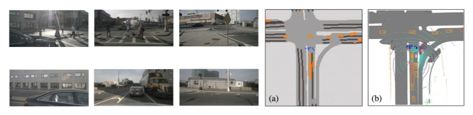
図1：問題設定。（a）に示す解釈可能なビジョンベースのエンドツーエンドフレームワークを考案する。これは、（b）に示す HD マップを援用した LiDAR ベースの対応手法と並ぶものである。
エンドツーエンドのパイプラインの 1 つの方向性は、中間表現を明示的に設計することなく、主に最終的な計画タスクに焦点を当てるものである［13,14,45,9,12,27］。計画される経路は一意ではなく、各行動は環境に応じて相応に報酬を与えられるべきであるため、強化学習（RL）は実現可能な解決策としてよく適合する。RL アルゴリズムは、経験豊富な人間の熟練者を模倣し、運転エージェントの行動学習を導くために適用されている［57,6］。RL 手法以外にも、知覚環境の知識を用いて軌道サンプラーとともにコストマップを生成するもの［27,12］や、注意機構の形でセンサーを融合するもの［45,19］が提案されている。前述のこれらの研究は、閉ループシミュレーション［18］における困難なシナリオで目覚ましい性能を達成している。しかし、合成環境から現実の応用へのもっともらしい移行は未解決の問題として残っている。
もう 1 つの方向性は、ネットワーク内の中間表現を明示的に設計し、各モジュールに説得力のある解釈可能性を与え、それによって安定で頑健なシステムに向けて安全性を高めることである。入力の種類に基づき、明示的な手法はそれぞれ LiDAR ベース［5,56,55,16］とビジョンベース［26,42,51］に分けられる。高精細（HD）マップと組み合わされた LiDAR ベースの手法は、さまざまなベンチマークで良好な性能を示しており、システムの各モジュールの効果を網羅的に調査している。しかし、信号機の認識や近距離での物体検出といった LiDAR 固有の欠点は、その応用を制限する可能性がある。
本論文では、解釈可能な LiDAR ベースのパイプライン［5,56］と並行して、ビジョンベースのエンドツーエンドフレームワークの可能性を調査することを提案する（図1）。各モジュールを精巧に設計した場合、知覚、予測、計画といった各タスクの性能はどの程度向上するのだろうか。
上記の問いに答えるため、ビジョンベース手法にとっての第 1 の重要な課題は、特徴表現を透視ビュー（perspective view）から鳥瞰図（BEV）空間へ適切に変換することである。先駆的な LSS 手法［42］は、マルチビューカメラから透視特徴を抽出し、深度推定によってそれらを 3D に持ち上げ（lift）、BEV 空間に融合する。2 つのビュー間の特徴変換には潜在的な深度予測が極めて重要であることが観察されている［26,51,46］。理論的に分析しても、2D 平面の情報を 3D に持ち上げるには追加の次元、すなわち 3D 幾何的な自動運転タスクに適合する深度が必要であるため、これは正しい。特徴表現をさらに改善するためには、ほとんどのシナリオが映像ソースを扱うものであることから、時間情報をフレームワークに組み込むのが自然である。［42］の流れを汲む後続の文献は、データセットが提供する自動運転車両（SDV）の自己運動（ego-motion）［26］、あるいはオプティカルフローから学習した写像［51］のいずれかによって、過去フレームの特徴を現在の座標ビューに射影する。これらの手法は過去の特徴をフレームごとに個別に射影して時間ユニットに入力する。これに対して我々は、BEV に変換する前に、整列したすべての過去特徴を 3D 空間で累積する。これにより幾何情報を最大限に保持し、現在状態のより頑健な特徴表現を補うことができる。これは経験的により良い設計選択であることが示されている。
BEV 空間における表現力の高い特徴を備えた上で、我々は予測タスクを、FIERY［26］と同様に将来のインスタンスセグメンテーションとして定式化する。一般的な手法では、現在状態のデータ分布から不確実性を生成し、それを時間モデルに入力して、将来の一定の時間窓における予測を推論する［26,51］。将来予測を向上させる自然な動機であるにもかかわらず現在の文献に欠けているのは、過去の運動の変動を考慮することである。そのために、融合ユニットを備えた追加の時間モデルを導入し、過去と将来の両方の運動の確率的性質を推論させることができる。これにより、より強力なシーン表現が得られ、それが最終的な計画タスクへの足がかりとなる。
運動計画器（motion planner）の一般的な考え方は、可能な候補のサンプリングと先行モジュールからの意味的結果が与えられたとき、最も尤もらしい軌道を出力することである［5,45,56,27］。解釈可能性の精神に基づき、これまでの研究の多くは、サンプラーにおける何らかの形の軌道モデリングとともに、軌道の信頼度を示すために、学習ベース［5,12］および／またはルールベース［55,6,56］のコストボリュームを構築する。我々はこのような考え方に従い、HD マップを手がかりとせずに、高レベルコマンドの助けを借りて最も可能性の高い候補を示す。得られた軌道は、ビジョンベースの要素（例えば信号機）を考慮するために、前方カメラからの特徴（前方ビュー特徴）を用いてさらに精緻化される。これは MP3［5］に着想を得たものであり、MP3 でも HD マップを除去し、高レベルコマンドをネットワークに入力している。しかし、［5］の視覚認識モジュールは既製品であると我々は考える。本研究では、軽量な GRU ユニットの形で同一ネットワーク内に視覚情報を統合する。このような精緻化処理は、最終結果に向けた補完的な特徴強化として機能する。
以上を踏まえ、我々は知覚・予測・計画の特徴学習をまとめて改善する、解釈可能なビジョンベースのエンドツーエンドシステム ST-P3 を提案する。図2 に全体のフレームワークを示す。具体的には、周囲を撮影する一組のカメラ映像が与えられると、それらをバックボーンに入力して予備的な前方ビュー特徴を生成する。2D 特徴を 3D 空間へ変換するために、補助的な深度推定を行う。自車中心整列累積の仕組みは、まず過去の特徴を現在のビュー座標系に整列させる。次に、現在と過去の特徴を 3D 空間で集約し、BEV 表現の前に幾何情報を保持する。予測には一般的に用いられる時間モデルに加え、過去の運動の変動を考慮する第 2 の経路を構築することで、このモジュールをさらに強化する。このような二経路モデリングにより、将来の意味的結果を推論するためのより強力な特徴表現が保証される。軌道計画という最終目標に向けて、ネットワークの初期段階の特徴から得られる事前知識を統合する。HD マップを用いず、高レベルコマンドの助けを借りて最終的な軌道を生成する精緻化モジュールを考案する。開ループの nuScenes データセットと閉ループのシミュレータ CARLA 環境の両方において、提案手法を従来の最先端手法とベンチマーク比較する。まとめると、ST-P3 は以下の貢献を備えている。
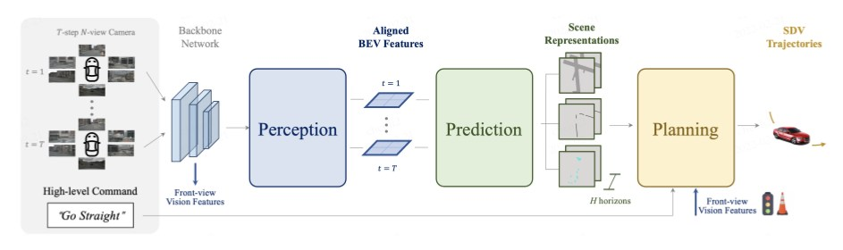
図2：解釈可能なエンドツーエンドのビジョンベースフレームワークである ST-P3 を提示する。知覚では、自車中心整列累積により、BEV 変換の前に（過去と現在の）特徴が 3D 空間で整列・集約され、幾何情報が保持されることを保証する。予測では、将来予測を追求するために過去の変動を取り込む二経路の仕組みを導入する。計画では、事前知識を精緻化ユニットに入力し、高レベルコマンドに基づく統合されたコストボリュームとサンプラーにより最終的な軌道を生成する。
図中ラベル：T-step N-view Camera＝T ステップ・N 視点のカメラ、Backbone Network＝バックボーンネットワーク、Front-view Vision Features＝前方ビューの視覚特徴、High-level Command＝高レベルコマンド、"Go Straight"＝「直進」、Perception＝知覚、Aligned BEV Features＝整列された BEV 特徴、Prediction＝予測、Scene Representations＝シーン表現、H horizons＝H ホライズン（予測時間幅）、Planning＝計画、SDV Trajectories＝自動運転車両（SDV）の軌道
関連研究を 4 つの観点から簡潔に議論する。
解釈可能なエンドツーエンドフレームワーク。システムの明確な解釈可能性を持たせ、それによって安全性を高めるために明示的な設計を採用する代表的な手法［16,55,56,48,5］を概観する。実環境ではビジョンベースの解決策がほとんどないため（前節ですでに比較した）、これらは主に LiDAR ベースの手法である。先駆的な NMP［55］は、LiDAR と HD マップを入力として、まず将来における行為者（actor）のバウンディングボックスを予測し、次に最良の計画軌道を選択するためのコストボリュームを学習する。続く P3［48］の研究は、微分可能な占有表現によって計画と知覚の間の一貫性をさらに実現しており、この占有表現は安全な操縦を生成するために計画においてコストとして明示的に用いられる。HD マップへの過度の依存を避けるために、Casas ら（MP3）［5］は、セグメンテーションからオンライン地図を構築するとともに、他のエージェントの現在および将来の状態を推定する。これらの結果はサンプラーベースの計画器に入力され、安全で快適な軌道が得られる。LookOut［16］は、シーンがどのように展開しうるかについて多様な将来の集合を予測し、一組の緊急時計画（contingency plan）を最適化することで軌道を推定する。DSDNet［56］は行為者間の相互作用を考慮し、社会的に一貫したマルチモーダルな将来予測を生成する。そして、構造化された計画コストを用いることで、予測された行為者の将来分布を明示的に活用して安全な操縦を計画する。一般に、LiDAR ベースの手法は困難な市街地シナリオで良好な性能を示す。残念ながら、これらの研究のデータセットとベースラインは比較のために公開されていない。
鳥瞰図（BEV）表現は、遮蔽やスケールの歪みなどの問題を回避し、3D のシーンレイアウトを保持するため、計画および制御タスクに自然かつ完璧に適合する［38,57,40,12,1］。LiDAR や HD マップの情報は BEV で容易に表現できるが、カメラビューからの視覚入力を BEV 空間へどのように射影するかは自明ではない問題である。いくつかの学習ベースの手法［12,40］は画像入力を暗黙的に BEV に射影するが、通常は射影過程を教師するための BEV における正解が存在しないため、その品質は保証されない。Loukkal ら［34］は、画像と BEV 平面の間のホモグラフィを用いて画像を明示的に BEV に射影する。［32,10］は、事前定義された BEV クエリを用いた空間的クロス注意によって BEV 特徴を獲得する。LSS［42］と FIERY［26］は、推定された深度と画像の内部パラメータを用いて射影を行い、目覚ましい性能を示している。我々も同様の方法で深度を予測し画像を射影する。過去の特徴をフレームごとに対応させて現在のタイムスタンプに変換する FIERY［26］とは異なり、我々はすべての過去の 3D 特徴を現在の自車ビュー（自車中心）に付け加えて整列済み特徴を累積し、後続タスクのためのより良い表現を提供する。
将来予測。現在の運動予測手法［39,21,28,33］は、通常、正解の知覚情報と HD マップを入力とするが、実応用で知覚入力が他のモジュールから来る場合には累積誤差の影響を受けやすい。生のセンサーデータを入力とし、将来の軌道予測に焦点を当てる、あるいはそれを中間ステップとするエンドツーエンド手法は、検出と予測のために通常 LiDAR と HD マップに依存する［36,56,55,16,52］。最近、カメラ入力のみを用いた BEV セマンティックセグメンテーションの形での将来予測［26,51］が提案され、優れた性能を示している。しかし、過去の発展過程は十分に捉えられ活用されていない［26,42,51］。映像の将来予測［24］に着想を得て、我々は確率的不確実性と過去のダイナミクスを組み合わせ、多様でもっともらしい将来のシーンを予測する。
運動計画。本節では、これまでの学習ベースの運動計画手法を取り上げ、従来型の手法は割愛する。暗黙的手法［44,14,45］では、ネットワークが計画軌道または制御コマンドを直接生成する。このような設計は直接的かつ単純であるが、頑健性の問題と解釈可能性の欠如を抱える。これに対して明示的手法は、通常、軌道サンプラーとともにコストマップを構築し、コストが最小の最適候補を選ぶことで所望の軌道を生成する。コストマップは、セグメンテーションや HD マップなどの中間表現に基づく手作りのルール［48,5,16］で構築することも、ネットワークから直接学習すること［55］もできる。DSDNet［56］は手作りのコストと学習ベースのコストを組み合わせて、統合されたコストボリュームを得る。我々もこの組み合わせを採用して最良の軌道を選択する。ただし、ナビゲーション信号を伴う追加の GRU 精緻化ユニットを加えることでパイプラインを修正し、選択された軌道をさらに調整・最適化する。
ST-P3 の概要を図2 に示す。ST-P3 はまず周囲画像の系列の特徴を抽出し、深度予測によってそれらを 3D に持ち上げる。これらは自車中心整列累積によって空間領域と時間領域の両方で融合される（3.1 節参照）。3.2 節では、履歴情報を取り込むための新しい不確実性モデリングである二経路の仕組みを示す。3.3 節では、中間表現を利用して安全で快適な軌道をどのように計画するかを詳述する。
この段階では、過去 \(t\) タイムスタンプのマルチビューカメラ入力から時空間 BEV 特徴を構築する必要がある。1 節で議論したように、直接の連結［51］には整列の問題があり、FIERY［26］は高さ情報の喪失に悩まされる。これらの問題に対して、ここでは 2 つのステップ、すなわち空間融合と時間融合を含む、累積型の自車中心整列手法を導入する。空間融合の部分では、すべてのタイムスタンプのマルチビュー画像を処理し、現在の自車中心 3D 空間に変換する。一方、時間融合のステップでは、静的要素と運動中の物体の特徴の識別性を累積的に強化し、最終的な融合を実現するために時間モデルを採用する。図3 に説明図を示す。
空間融合。一方で、マルチビュー画像からの特徴は共通の座標系に変換されなければならない。［42］に着想を得て、各画像について特徴を抽出して対応する深度を予測し、それをグローバルな 3D 座標系に持ち上げる。具体的には、各カメラ画像 \(I_t^n \in \mathbb{R}^{3\times H\times W}\) をバックボーンネットワークに通し、特徴 \(f_i^k \in \mathbb{R}^{C\times H_e\times W_e}\) と深度推定 \(d_i^k \in \mathbb{R}^{D\times H_e\times W_e}\) をそれぞれ得る。ここで \(i \in \{1,\ldots,t\}\)、\(n \in \{1,\ldots,6\}\)、\(C\) は特徴チャネル数、\(D\) は離散深度の数、\((H_e, W_e)\) は空間サイズを表す。（訳注：原文では画像を \(I_t^n\)、特徴・深度を \(f_i^k\)、\(d_i^k\) と表記しており、時刻とカメラの添え字（\(t\)/\(i\)、\(n\)/\(k\)）が一致していないが、原文のまま記載した。）正確な深度情報は得られないため、予測された深度分布に従って、行列の外積をとることで特徴を空間の光線全体に広げる。
\[ u_i^k = f_i^k \otimes d_i^k, \tag{1} \]
ここで \(u_i^k \in \mathbb{R}^{C\times D\times H_e\times W_e}\) である。次に、カメラの外部パラメータと内部パラメータを用いて、カメラ特徴の視錐台 \(u_i \in \{u_i^1,\ldots,u_i^n\}\) を、時刻 \(i\) における自車の慣性中心を原点とするグローバル 3D 座標に変換する。
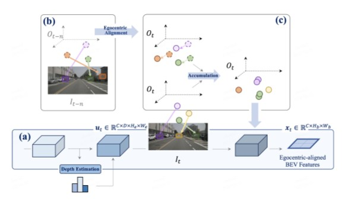
図3：知覚のための自車中心整列累積。（a）現在のタイムスタンプの特徴は深度推定によって 3D に持ち上げられ、整列後に BEV 特徴 \(x_t\) へプーリングされる。（b-c）以前のフレームの 3D 特徴は現在のビューに整列され、過去および現在のすべての状態と融合される。これにより特徴表現が強化される。
図中ラベル：Egocentric Alignment＝自車中心整列、Accumulation＝累積、Depth Estimation＝深度推定、Egocentric-aligned BEV Features＝自車中心整列された BEV 特徴
他方で、空間融合では、下流の予測および計画タスクのために、過去の特徴を現在のフレームに整列させる必要がある。時刻 \(t-1\) から \(t\) への自己運動を用いれば、時刻 \(t-1\) で得られたキューブを時刻 \(t\) の SDV を中心とする座標系に変換できる。同じ処理を過去のフレームにも適用でき、その結果、以前のすべてのタイムスタンプについて自車中心の特徴 \(\{u_i^{'}\}\) が得られる。最終的に、BEV 特徴マップ \(b_i \in \mathbb{R}^{C\times H_b\times W_b}\) は、\(\{u_i^{'}\}\) を鉛直方向に沿って和プーリング（sum pooling）することで得られる。
時間融合。古典的な時間融合手法は、積み重ねた BEV 特徴に対して 3D 畳み込みを直接適用する。しかし、車線や停止車両のように地面上で静止している物体があれば、さまざまなキューブの同じ位置にある対応する特徴は類似しているはずであることに注意されたい。この性質を踏まえ、以前の BEV 特徴マップを現在のものに加算することで、静的物体の知覚能力を高める自己注意（self-attention）を行う。これは次のように定式化できる（ここで割引率 \(\alpha = 0.5\)、\(\tilde{x}_1 = b_1\)）。
\[ \tilde{x}_t = b_t + \sum_{i=1}^{t-1} \alpha^i \times \tilde{x}_{t-i}, \tag{2} \]
動的物体をより正確に知覚するために、次にこれらの特徴を 3D 畳み込みで実現された時間融合ネットワークに入力する。自車の運動によって生じるずれを補償するため、運動行列を空間チャネル方向に連結して特徴に加える。
\[ x_{1\sim t} = \mathcal{C}(\tilde{x}_{1\sim t}, m_{1\sim t}), \tag{3} \]
ここで \(m_{1\sim t}\) は自己運動行列を、\(\mathcal{C}\) は 3D 畳み込みネットワークを表す。
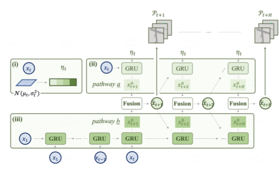
図4：予測のための二経路モデリング。（i）潜在コードは特徴マップの分布から得られる。（ii-iii）経路 a は不確実性分布を取り込んで将来の多峰性を表し、一方 b は過去の変動から学習する。これは a の情報を補うのに有益である。
図中ラベル：pathway a＝経路 a、pathway b＝経路 b、Fusion＝融合
動的な運転環境において、従来の運動予測アルゴリズム［53,20,17］は、将来の軌道を決定論的またはマルチモーダルな結果として予測することが多い。しかし、エージェント、交通要素、道路環境の間の相互作用のために、有限個の確率のモデリングでは将来の複雑な状況をカバーできない。将来の確率性に対処するため、我々は予測特徴における条件付き不確実性を推論したい。Hu ら［25］に動機づけられ、将来の不確実性を、平均 \(\mu \in \mathbb{R}^L\)、分散 \(\sigma^2 \in \mathbb{R}^L\) の対角ガウス分布としてモデル化する。ここで \(L\) は潜在チャネル数である。この分布からのサンプルは、将来に用いる隠れ状態の特徴として機能しうる。なお、学習時にはサンプル \(\eta_t \sim \mathcal{N}(\mu_t, \sigma_t^2)\) を用いるが、推論時には \(\eta_t \sim \mathcal{N}(\mu_t, 0)\) からサンプリングする。
予測モジュールのアーキテクチャを図4 に示す。現在のタイムスタンプまでの BEV 特徴と将来の不確実性分布を予測モデルに統合し、それぞれが二重モデリングにおける 2 つの経路に対応する。一方は、履歴特徴 \((x_1,\ldots,x_t)\) を GRU の入力とし、\(x_1\) を予測のための初期隠れ状態とする。もう一方は、\(\eta_t\) からのサンプルを GRU の入力とし、\(x_t\) を初期隠れ状態とする。時刻 \(t+1\) の特徴を予測する際には、予測された特徴を混合ガウスの形で組み合わせる。
\[ \hat{x}_{t+1} = \mathcal{G}(x_t, \eta_t) \oplus \mathcal{G}(x_{0:t}), \tag{4} \]
ここで \(\mathcal{G}\) は GRU の処理を表す。そして、この混合予測を以降の予測過程の基礎として用いる。この方法により、二重モデリング（Dual Modelling）は将来の状態 \((\hat{x}_{t+1},\ldots,\hat{x}_{t+H})\) を再帰的に予測する。
すべての特徴 \((x_1,\ldots,x_t)\)、\((\hat{x}_{t+1},\ldots,\hat{x}_{t+H})\) は、複数の出力ヘッドを持つデコーダ \(\mathcal{D}\) に入力され、さまざまな解釈可能な中間表現が生成される。その結果を図6 に示す。インスタンスセグメンテーションタスクについては［26］の評価指標に従い、ヘッドはインスタンスの中心度（centerness）、オフセット、将来フローを出力する。一方、セマンティックセグメンテーションのヘッドは、主に運転環境における主要な行為者である車両と歩行者に焦点を当てる。さらに、HD マップは自動運転において極めて重要な役割を果たすため［48,49,55］、解釈可能な地図表現を提供するために、走行可能領域と車線という 2 つの要素を明示的に生成する。計画ホライズン内で SDV がとりうる各位置のコストを表すために、コストボリュームのヘッドを設計する。コストボリュームのより詳細な情報は 3.3 節で説明する。なお、二重モデリングが必要とする履歴特徴の精度を高めるために、過去フレームの特徴もデコードすることに注意されたい。4.1 節で示すように、より正確な特徴情報はより良い予測につながりうる。
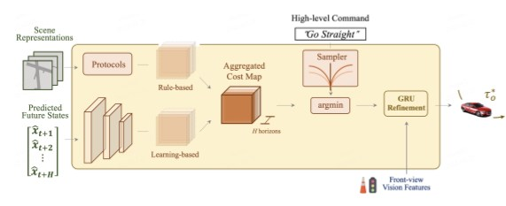
図5：計画のための事前知識の統合と精緻化。全体のコストマップは 2 つのサブコストを含む。コスト最小の軌道は、カメラ入力からのビジョンベースの情報を集約するために、前方ビュー特徴を用いてさらに精緻化される。
図中ラベル：Scene Representations＝シーン表現、Predicted Future States＝予測された将来状態、Protocols＝プロトコル（規則）、Rule-based＝ルールベース、Learning-based＝学習ベース、Aggregated Cost Map＝集約コストマップ、H horizons＝H ホライズン、High-level Command＝高レベルコマンド、"Go Straight"＝「直進」、Sampler＝サンプラー、GRU Refinement＝GRU 精緻化、Front-view Vision Features＝前方ビューの視覚特徴
最終目標として、運動計画器は目標地点に向けた安全で快適な軌道を計画する必要がある。占有予測 \(o\) と地図表現の知覚 \(m\) が与えられたとき、［55,48,5］に着想を得て、多様な軌道の集合をサンプリングし、学習されたコスト関数を最小化するものを選ぶ運動計画器を設計する。ただし我々は、目標地点と信号機の情報を統合するために、時間モデルによる追加の最適化ステップを加える点でそれらと異なる。モジュール全体を図5 に示す。
コスト関数は、学習された占有確率場（予測におけるセグメンテーションマップ）に加え、交通規則などの豊富な事前知識も最大限に活用し、最終的な軌道の安全性と滑らかさを確保する。形式的には、SDV の動的状態が与えられたとき、自転車モデル［43］を採用して軌道の集合 \(\tau\) をサンプリングする。目的コスト関数 \(f\) は、事前知識に従って各タイムスタンプ \(t\) で予測軌道を評価する \(f_o\)、予測デコーダからの（学習ベースの）\(f_v\)、および快適性や進捗といった軌道の全体的な性能に関わる \(f_r\) というサブコストから構成される。したがって、全体のコスト関数は次のような等重みの組み合わせとなる。
\[ f(\tau, o, m; w) = f_o(\tau, o, m; w_o) + f_v(\tau; w_v) + f_r(\tau; w_r), \tag{5} \]
ここで \(w = (w_o, w_v, w_r)\) はすべての学習可能パラメータのベクトルである。以下でサブコストを簡潔に説明し、詳細は付録に譲る。
安全コスト。SDV は道路上の他の物体と衝突してはならず、軌道を計画する際にはそれらの将来の運動を考慮する必要がある。計画された軌道は、他のエージェントや道路要素が占有するグリッドと重なってはならず、高速走行時には一定の安全距離を維持する必要がある。
コストボリューム。道路情報は複雑であるため、可能なすべてのケースや計画コストを手作業で列挙することはできない。そこで、3.2 節のヘッドによって生成される学習済みのコストボリュームを導入する。コストのスケールのバランスをとるため、軌道評価において支配的な役割を果たさないよう値をクリップする。
快適性と進捗。横加速度、ジャーク、または曲率が大きい軌道にはペナルティを課す。軌道が目的地に向けて効率的であることを望むため、前方へ進む軌道には報酬を与える。
しかし、上記のコストには、ルート付き地図によって提供されることの多い目標情報が含まれていない。しかも、それは我々の設定では利用できない。そこで、前進、左折、右折を含む高レベルコマンドを採用し、対応するコマンドに従って軌道を評価するだけにする。まとめると、運動計画器は次のように最小コストの軌道を出力する。
\[ \tau^* = \arg\min_{\tau_h} f(\tau_h, c) = \arg\min_{\tau_h} f(\tau_h, o, m; w), \tag{6} \]
ここで \(\tau^*\) は選択された軌道、\(\tau_h\) は対応する高レベルコマンドの下での軌道集合、\(c\) は全体のコストマップである。さらに、信号機は SDV にとって極めて重要であるが、前段のモジュールでは明示的に利用されていない。我々は GRU ネットワークを通じてそれを考慮し、軌道を精緻化する。エンコーダモジュールからの前方カメラ特徴で隠れ状態を初期化し、\(\tau^*\) の各サンプル点を入力として用いる。表5 では、前方カメラ特徴が実際に信号機の情報を捉えており、それが SDV の交差点での発進や停止に役立つことが示されている。
次の損失関数を用いることで、知覚、予測、計画とともにモデルをエンドツーエンドに最適化する。
\[ \mathcal{L} = \mathcal{L}_{per} + \alpha\mathcal{L}_{pre} + \beta\mathcal{L}_{pla}. \tag{7} \]
なお、［30,11］のプロトコルに従い、重み \(\alpha\)、\(\beta\) を固定ではなく学習可能とし、対応するタスク損失の勾配に応じて異なるタスク間のスケールのバランスをとる。
知覚損失。この損失には、現在および過去のフレームに対するセグメンテーション損失、マッピング損失、補助的な深度損失が含まれる。セマンティックセグメンテーションについては、BEV 画像の大部分が背景で占められているため、［26］と同様に top-k 交差エントロピー損失を用いる。インスタンスセグメンテーションについては、中心度の教師には \(l_2\) 距離損失を、オフセットおよびフローのタスクには \(l_1\) 距離損失を採用する。車線と走行可能領域の予測には交差エントロピー損失を用いる。現在の手法［42,51］は、直接の教師ではなく下流タスクを利用して深度予測を暗黙的に最適化するが、この方法は明確な説明可能性がないまま最終的な損失関数の設計に著しく影響される。そこで我々は、事前に別のネットワークで深度値を生成し、それを用いて予測を導く。詳細は付録にある。
予測損失。我々の予測モジュールは将来のセマンティックセグメンテーションとインスタンスセグメンテーションを推論するため、知覚と同じ top-k 交差エントロピー損失を用いる。ただし、予測の不確実性のため、将来のタイムスタンプにおける損失は指数的に割り引かれる。
計画損失。我々の計画モジュールは、まず式（6）のように、サンプリングされた軌道集合 \(\tau\) から最良の軌道 \(\tau^*\) を選択し、次に GRU ベースのネットワークを適用して軌道をさらに精緻化し、最終出力 \(\tau_o^*\) を得る。したがって計画損失は 2 つの部分、すなわち熟練者の行動 \(\tau_h\) を正例、サンプリングされた軌道を負例として扱うマックスマージン損失と、出力と熟練者軌道の間の素朴な \(l_1\) 距離損失からなる。具体的には次のように設定する。
\[ \mathcal{L}_{pla} = \max_{\tau}\left[f(\tau_h, c) - f(\tau, c) + d(\tau_h, \tau)\right]_+ + d(\tau_h, \tau_o^*), \tag{8} \]
ここで \([\cdot]_+\) は ReLU を、\(d\) は入力軌道間の \(l_1\) 距離を表す。（訳注：式（6）では \(\tau_h\) を「高レベルコマンドの下での軌道集合」としているが、式（8）では熟練者の軌道を表しており、同じ記号が異なる意味で用いられている。）
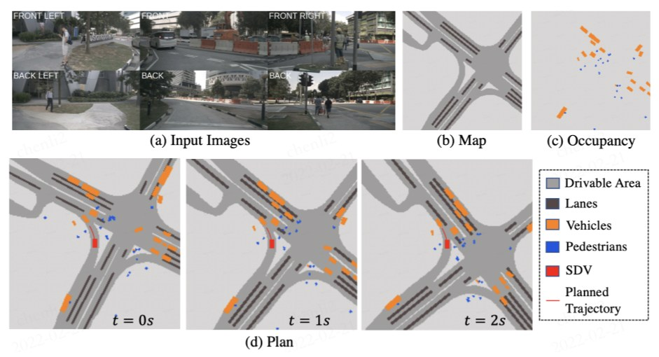
図6：nuScenes における定性的結果。（b）は走行可能領域と車線を含む予測された地図表現を示す。（c）は車両と歩行者のセグメンテーションを示す。（a-c）は \(t = 1s\) のものである。（d）は本モデルの全体的な結果（知覚、予測、計画）を表す。中間のシーン表現は時間区間を通じて頑健であり、SDV は縁石や前方車両と衝突することなく左折するための安全な軌道を生成することに成功している。
図中ラベル：(a) Input Images＝入力画像、FRONT LEFT／FRONT／FRONT RIGHT＝左前／前／右前、BACK LEFT／BACK／BACK RIGHT＝左後／後／右後、(b) Map＝地図、(c) Occupancy＝占有、(d) Plan＝計画、Drivable Area＝走行可能領域、Lanes＝車線、Vehicles＝車両、Pedestrians＝歩行者、SDV＝自車（自動運転車両）、Planned Trajectory＝計画軌道
ST-P3 を開ループと閉ループの両方の環境で評価する。開ループの設定には nuScenes データセット［4］を、閉ループでの実証には CARLA シミュレータ［18］を採用する。デフォルトでは、過去 1.0\(s\) のコンテキストを用いて将来 2.0\(s\) のコンテキストを予測する。これは過去 3 フレーム、将来 4 フレームに相当する。プロトコルの詳細は付録で述べる。
知覚。地図表現とセマンティックセグメンテーションについてモデルを評価する。知覚される地図には、運転行動にとって最も重要な 2 つの要素である走行可能領域と車線が含まれる。これは、SDV が走行可能領域内を走行し、車線の中央を維持すると想定されているためである。セマンティックセグメンテーションは、いずれも運転環境における主要なエージェントである車両と歩行者に焦点を当てる。知覚モジュールを BEV セグメンテーションタスクとしてモデル化し、評価指標として Intersection-over-Union（IoU）を用いる。表1 に示すように、ST-P3 は nuScenes 検証セットで最も高い平均値を得ており、我々の自車中心整列累積アルゴリズムによって従来の最先端（SOTA）を 2.51% 上回っている。
| 手法 | 平均値 | 走行可能領域 | 車線 | 車両 | 歩行者 |
|---|---|---|---|---|---|
| VED［35］ | 28.19 | 60.82 | 16.74 | 23.28 | 11.93 |
| VPN［40］ | 30.36 | 65.97 | 17.05 | 28.17 | 10.26 |
| PON［47］ | 30.52 | 63.05 | 17.19 | 27.91 | 13.93 |
| Lift-Splat［42］ | 34.61 | 72.23 | 19.98 | 31.22 | 15.02 |
| IVMP［51］ | 36.76 | 74.70 | 20.94 | 34.03 | 17.38 |
| FIERY［26］ | 40.18 | 71.97 | 33.58 | 38.00 | 17.15 |
| ST-P3 | 42.69 | 75.97 | 40.20 | 40.10 | 14.48 |
表1：知覚の結果。中間表現の BEV セグメンテーション IoU（%）とその平均値を報告する。ST-P3 はほとんどの場合で上回っている。
予測。BEV における将来セグメンテーションの予測は［26］で初めて提案されたため、これをベースラインとして選ぶ。映像予測分野の評価指標［31］に従い、IoU、および既存のパノプティック品質（PQ）、認識品質（RQ）、セグメンテーション品質（SQ）の指標でモデルを評価する。何もないところから出現する車両は予測できないため、過去のフレームに現れた車両のみを予測することに注意されたい。結果を表2 に示す。予測モジュールの新しい設計の結果として、我々のモデルはすべての指標で最先端を達成している。Gaus. 版は Ber. 版よりわずかに性能が劣るが、メモリ使用量が比較的小さいため、最終的にはこちらを選択する。
計画。開ループの計画については、L2 誤差と衝突率という 2 つの評価指標に注目し、公平な比較のために計画ホライズンを 3.0\(s\) に調整する。計画軌道と人間の運転軌道の間の L2 誤差を計算し、SDV が道路上の他のエージェントとどの程度の頻度で衝突するかを評価する。従来手法との詳細な比較を表3 に示す。Vanilla アルゴリズムは軌道が正解からどれだけ逸脱するかに基づいてペナルティを課されるため、すべての予測ホライズンで L2 誤差は最小であるが、衝突率は最大となることに注意されたい。ST-P3 は最も低い衝突率を得ており、我々の計画軌道の安全性が優れていることを示している。
ST-P3 の適用性と頑健性を示すため、CARLA シミュレータで閉ループ実験を行う。運転の誤差が積み重なって危険な衝突につながるため、これははるかに困難である。［45］に従い、ルート完了率（RC）、すなわち完了したルート距離の割合と、運転スコア（DS）、すなわち歩行者や車両などとの衝突を考慮したペナルティ係数で重み付けした RC を採用する。表4 に、2 つのカメラベースのアルゴリズムおよび LiDAR ベースの SOTA 手法との比較を示す。ST-P3 はすべての指標でカメラベースの手法を上回り、LiDAR ベースの手法と同等である。Tansfuser［45］（訳注：Transfuser の誤記）は、走行距離が短いことによるペナルティの低さが主な理由で、長距離ルートにおいてより高い運転スコアを持つ。ST-P3 は目覚ましいルート完了性能を得ており、これは前方ビジョンによる精緻化の助けによって衝突から回復する能力を示している。
| 手法 | 将来セマンティックセグメンテーション | 将来インスタンスセグメンテーション | ||
|---|---|---|---|---|
| IoU ↑ | PQ ↑ | SQ ↑ | RQ ↑ | |
| Static | 32.20 | 27.64 | 70.05 | 39.08 |
| FIERY［26］ | 37.00 | 30.20 | 70.20 | 42.90 |
| ST-P3 Gaus. | 38.63 | 31.72 | 70.15 | 45.22 |
| ST-P3 Ber. | 38.87 | 32.09 | 70.39 | 45.59 |
表2：予測の結果。セマンティックセグメンテーションの IoU（%）と、映像予測分野のインスタンスセグメンテーション指標を報告する。static 手法は、予測ホライズンにおいてすべての障害物が静止していると仮定する。「Ber.」は将来の不確実性をベルヌーイ分布としてモデル化することを表し、「Gaus.」はガウス分布を意味する。ST-P3 はすべての時間的セグメンテーション指標で最良の性能を達成している。
| 手法 | L2 (\(m\)) ↓ | 衝突率（%）↓ | ||||
|---|---|---|---|---|---|---|
| 1s | 2s | 3s | 1s | 2s | 3s | |
| Vanilla | 0.50 | 1.25 | 2.80 | 0.68 | 0.98 | 2.76 |
| NMP［55］ | 0.61 | 1.44 | 3.18 | 0.66 | 0.90 | 2.34 |
| Freespace［27］ | 0.56 | 1.27 | 3.08 | 0.65 | 0.86 | 1.64 |
| ST-P3 | 1.33 | 2.11 | 2.90 | 0.23 | 0.62 | 1.27 |
表3：開ループ計画の結果。vanilla 手法は正解軌道のみで教師される。ST-P3 はすべての時間区間で最も低い衝突率を達成している。
| 手法 | Town05 Short | Town05 Long | ||
|---|---|---|---|---|
| DS ↑ | RC ↑ | DS ↑ | RC ↑ | |
| CILRS［14］ | 7.47 | 13.40 | 3.68 | 7.19 |
| LBC［9］ | 30.97 | 55.01 | 7.05 | 32.09 |
| Transfuser*［45］ | 54.52 | 78.41 | 33.15 | 56.36 |
| ST-P3 | 55.14 | 86.74 | 11.45 | 83.15 |
表4：閉ループシミュレーションの結果。ST-P3 はすべてのシナリオでビジョンベースのベースラインを上回り、長距離テストでは LiDAR ベースの手法と比べてより良いルート完了性能を達成している。*：LiDAR ベースの手法。
表5 は ST-P3 における各モジュールの有効性を示す。知覚および予測タスクについては車両 IoU と車両 PQ を、計画の評価については L2 と衝突率を報告する。表5 の Exp.1-3 では、知覚における深度の教師と自車中心整列累積（EAA.）の影響を示す。Exp.1 は FIERY［26］と同一であることに注意されたい。我々のモジュールは EAA. アルゴリズムを採用することで 0.79% 改善し（Exp.2）、深度を明示的に教師することでさらに 1.31% の改善をもたらす（Exp.3）。Exp.4-6 は、二重モデリングと、それに対応する学習方法である全状態に対する損失（LFA.）が予測タスクに与える影響を示す。二重モデリングは不確実性と履歴的な連続性の両方を考慮するため、過去の特徴の正しさがそこで極めて重要な役割を果たす。結果が示すように、これら 2 つの戦略は V.IoU と V.PQ をそれぞれ 1.54% と 3.09% 改善する。Exp.7-9 は計画におけるサンプラーと GRU 精緻化ユニットに関するものである。前方ビジョンによる精緻化を伴わないサンプラー（Exp.7）や、サンプリングの事前知識を持たない暗黙的モデル（Exp.8）は、いずれも高い L2 誤差と衝突率となる。我々の設計は計画軌道の安全性と精度を著しく改善する。
| Exp. | EAA. | Depth | Dual. | LFA. | S. | R. | V. IoU ↑ | V. PQ ↑ | L2 ↓ | Col. ↓ |
|---|---|---|---|---|---|---|---|---|---|---|
| 1 | 38.00 | - | - | - | ||||||
| 2 | ✓ | 38.79 | - | - | - | |||||
| 3 | ✓ | ✓ | 40.10 | - | - | - | ||||
| 4 | ✓ | ✓ | 37.09 | 28.63 | - | - | ||||
| 5 | ✓ | ✓ | ✓ | 38.16 | 31.35 | - | - | |||
| 6 | ✓ | ✓ | ✓ | ✓ | 38.63 | 31.72 | - | - | ||
| 7 | ✓ | ✓ | ✓ | ✓ | ✓ | - | - | 2.128 | 0.850 | |
| 8 | ✓ | ✓ | ✓ | ✓ | ✓ | - | - | 2.321 | 1.089 | |
| 9 | ✓ | ✓ | ✓ | ✓ | ✓ | ✓ | - | - | 1.890 | 0.513 |
表5：nuScenes 検証セットでのアブレーション。Exp.1-3 は、知覚における深度の教師（Depth）と自車中心整列累積モジュール（EAA.）の有効性を調べる。Exp.4-6 は予測モジュールに関するもので、「Dual.」は二重モデリングを、「LFA.」はすべてのタイムスタンプに対する損失を表す。Exp.7-9 は、計画においてサンプラー（S.）と精緻化（R.）ユニットを組み合わせることの優位性を示す。「V.IoU」は車両の IoU 指標、「V.PQ」は車両のパノプティック品質、「Col.」は衝突率を表す。
本論文では、自動運転タスクのための解釈可能なエンドツーエンドのビジョンベースフレームワークを提案した。改良された設計の背後にある動機は、空間領域と時間領域の両方で特徴表現を強化することである。3D 空間で特徴を集約し幾何情報を保持する自車中心整列累積を提案し、フレームをまたぐ意味表現の確率的性質を推論する二経路モデリングを考案し、道路要素を考慮する事前知識精緻化ユニットを導入した。ST-P3 パイプライン内のこれらの改良を合わせることで、従来の最先端手法と比較して目覚ましい性能を達成した。
本プロジェクトは、Shanghai Committee of Science and Technology（Grant No. 21DZ1100100）の一部支援を受けている。本研究はまた、National Key Research and Development Program of China（2020AAA0107600）、Shanghai Municipal Science and Technology Major Project（2021SHZDZX0102）および NSFC（61972250, 72061127003）の一部支援を受けている。
参考文献は原文のまま掲載した（各項目末尾の、引用箇所のページへの逆参照番号は省略した）。
（訳注：文献［24］と［25］は同一の文献が重複して掲載されている。）
空間・時間的知覚。nuScenes データセットについては、まず元画像 \(\mathbb{R}^{3\times 900\times 1600}\) を \(\mathbb{R}^{3\times 224\times 480}\) に切り出し・リサイズし、過去 3 フレームをモデルに入力する。これを \(I_t^n \in \mathbb{R}^{3\times 224\times 480}\) と表す。ここで \(t \in \{1,2,3\}, n \in \{1,\ldots,6\}\) である。バックボーンとして EfficientNet-b4［50］を用い、特徴 \(f_i^k \in \mathbb{R}^{C\times H_e\times W_e}\) と深度推定 \(d_i^k \in \mathbb{R}^{D\times H_e\times W_e}\) を得る。ここで \(C = 64, D = 48, H_e = 28, W_e = 60\) である。深度は \(2m\) から \(50m\) まで \(1m\) 間隔であることに注意されたい。予測された深度分布に従って特徴を空間の光線全体に広げた後、全方向のカメラ画像を \(u_i^k \in \mathbb{R}^{C\times D\times H_e\times W_e}\) と表す。次に、自己運動行列を用いて、すべての周囲カメラとタイムスタンプの特徴を時刻 \(t\) の SDV を中心とする座標系に変換し、自車中心の特徴 \(\{u_i^{'}\}\) を得る。最後に、BEV 特徴マップ \(b_i \in \mathbb{R}^{C\times H_b\times W_b}\) は、\(H_b = 200, W_b = 200\) として \(\{u_i^{'}\}\) から和プーリングによって得られる。
特徴を強化するために、時間融合ステップにおいて累積手法によって各フレームに履歴情報を統合できる。次に、時間的特徴をより良く整列させるため、これらの特徴を 3D 畳み込みで実現された時間ネットワークに入力する。具体的には、異なる受容野を考慮するために、時間チャネル上で \([(2,3,3),(1,3,3)]\) という異なる 3D カーネルサイズと、カーネルサイズ \((2,200,200)\) のピラミッドプーリングを適用する。すべての出力を連結して最終の圧縮畳み込み層に入力し、最終出力 \(x_{1\sim t} \in \mathbb{R}^{C\times H_b\times W_b}\) を得る。なお、出力特徴は時間ネットワークを通過した後も入力と同じ形状を保ち、異なるタイムスタンプからの特徴が統合される。
将来予測。実験では、ガウス分布とベルヌーイ分布という 2 つの異なる分布によって将来の不確実性をモデル化する。ガウス分布の場合、現在の特徴 \(x_t\) をいくつかの残差ブロック層と平均プーリング層に通し、隠れ状態 \(\mathbb{R}^{32\times 1\times 1}\) を得る。次に、カーネルサイズ \((1,1)\) の 2D 畳み込みで、\(R^{32}\times R^{32}\) のガウス分布の平均と対数分散をフィッティングする。ベルヌーイ分布の場合、空間の各グリッドは \(0-1\) であるため、\(x_t\) をいくつかの残差ブロック層に通し、LogSigmoid を通して各グリッドの確率を回帰する。予測ネットワークには、畳み込みゲート付き回帰ユニット（Convolutional Gated Recurrent Unit）を基本モジュールとして用い、各ゲートはストライド 3 の 2D 畳み込みで実現される。予測された特徴は、出力チャネルが 2 の 2D 畳み込みで実装された信頼ゲート（trusting gate）によって組み合わせ、それを 2 つの予測特徴を加算する際の重みとして用いる。混合された予測特徴は、その後「不確実性」経路の隠れ状態および「履歴」経路の入力状態として用いられる。この方法により、将来の状態 \((\hat{x}_{t+1},\ldots,\hat{x}_{t+H})\) を再帰的に予測できる。
BEV 表現のためのデコーダ。デコーダの頑健性を考慮して、すべてのタスクヘッドは同じバックボーンを共有する。これは ResNet-18［23］の最初の 3 層と、スキップ接続を伴う倍率 2 の 3 つのアップサンプリング層で実装される。特徴はこの時点で 64 チャネルを持ち、その後タスクの要件に応じて異なるヘッドに渡される。各ヘッドは、出力チャネル数の異なる 2 つの 2D 畳み込みで構成される。具体的には、すべてのセマンティックセグメンテーションヘッドの出力チャネル数を 2 とする。ただし、インスタンスセグメンテーションタスクではオフセット、中心、将来フローを予測する必要があるため、それぞれ 2、1、2 に設定する。
本節では、スコアリング関数と精緻化 GRU ネットワークの実装をより詳しく述べる。
安全コスト。SDV は道路上の他の物体と衝突してはならず、軌道を計画する際にはそれらの将来の運動を考慮する必要がある。この目的のため、予測された占有マップを用いて、占有領域と交差する軌道にペナルティを課す。形式的には、各タイムスタンプ \(t\) における軌道 \(\tau\) について、SDV のポリゴン \(g\) が他の物体に占有されたグリッド（パラメータ \(\lambda\) で示される安全マージンを含む）と交差する場合に \(\tau\) にペナルティを課し、これを \(o_g(\tau, t, \lambda)\) で表す。物体との衝突に関する安全コストは次式で与えられる。
\[ f_o(\tau, o) = \sum_t \sum_g o_g(\tau, t, 0) + o_g(\tau, t, \lambda)\,v(\tau, t), \tag{9} \]
ここで第 1 項は交差するグリッドにペナルティを課し、第 2 項は不確実な占有を伴う高速走行にペナルティを課す。
さらに、SDV は通常先行車に追従しており、主に先行車の速度に依存する一定の安全距離を保つべきである。HD マップが利用できず、したがって中央車線に沿った先行車が不明であるため、代わりに SDV の速度によって決まる距離 \(L\) だけ SDV の前方にある占有グリッドを計算する。したがって、先行車に近づきすぎるとコストが大きくなり、その軌道は悪いと評価される。ただし、車線変更の操作中は先行車が SDV の真正面にいないため、これは機能しない。
上記の目的関数は移動物体に焦点を当てているが、一方で車両は車線の中央にとどまるべきでもある。第 1 段階で知覚された車線を用い、車線境界線までの距離として設定したコスト関数によって、この交通上の安全を確保できる。
精緻化。スコアリング関数に従って選択された軌道 \(\tau^*\) を得た後、GRU ネットワークによってそれを精緻化する。具体的には、GRU の隠れ状態はエンコーダからの前方カメラの特徴であり、入力状態は現在位置、選択された軌道 \(\tau^*\) からの位置、および目標地点を連結したものである。なお、初期の現在位置は \((0,0)\) である。同じ処理を行うことで、前方カメラの情報と目標地点の情報を考慮した最終的な精緻化軌道を再帰的に得ることができる。
本節では、明示的な教師のために nuScenes データセットの深度マップをどのように生成するかを説明する。
深度生成において優れた性能を持つ、セマンティックセグメンテーションを必要とする自己教師あり手法 FSRE-Depth［29］を採用する。FSRE-Depth はセマンティックセグメンテーションを入力として用いるため、まず Mapillary Vistas Dataset［37］でセグメンテーションモデルを学習する。次にそれを nuScenes データセットに適用して、図7(b) に示すような意味的結果を生成する。次のステップでは、ResNet-50 をバックボーンとして、nuScenes の前方ビュー画像で FSRE-Depth を学習する。入力画像の解像度は \(1216 \times 672\) である。45 エポックの学習後、モデルは前方ビュー画像に対して十分な結果を予測できる。深度モデルの性能を活用するため、さらに各カメラビューで 15 エポック学習する。これにより、すべてのカメラビューの深度マップをこのモデルで個別に生成できる。深度マップを評価するため、20 枚の画像ごとに LiDAR 点を用いて深度推定指標を計算する。結果を表6 に示す。これは我々の深度マップが十分な品質を持つことを示している。図7(c) のこの結果は、ST-P3 の知覚モジュールにおける深度推定を明示的に教師するために利用される。
| ビュー | ARE | SQE | RSME | RSME log | \(\delta\) | \(\delta^2\) | \(\delta^3\) |
|---|---|---|---|---|---|---|---|
| FRONT | 0.1522 | 3.5165 | 6.8756 | 0.2252 | 0.8720 | 0.9474 | 0.9701 |
| FRONT LEFT | 0.2516 | 2.6591 | 5.7600 | 0.3035 | 0.7290 | 0.8755 | 0.9317 |
| FRONT RIGHT | 0.3030 | 5.9052 | 6.6903 | 0.3278 | 0.7067 | 0.8651 | 0.9231 |
| BACK | 0.2297 | 5.5757 | 7.8486 | 0.3020 | 0.8011 | 0.9159 | 0.9535 |
| BACK LEFT | 0.2752 | 3.6375 | 5.7691 | 0.3110 | 0.6982 | 0.8673 | 0.9279 |
| BACK RIGHT | 0.3021 | 3.9396 | 6.2027 | 0.3413 | 0.6605 | 0.8503 | 0.9279 |
表6：深度マップの評価。ARE：絶対相対誤差、SRE：二乗相対誤差、RSME：二乗平均平方根誤差、RSME log：対数二乗平均平方根誤差、\(\delta\)：精度（閾値 1.25）。（訳注：キャプションの「SRE」は表の列名では「SQE」、「RSME」は一般に RMSE と表記される指標であり、いずれも原文の表記のまま記載した。）
データセット。ST-P3 を開ループと閉ループの両方の環境で評価する。開ループの設定には nuScenes データセット［4］を、閉ループでの実証には CARLA シミュレータ［18］を採用する。
nuScenes については、デフォルトで過去 1.0\(s\) のコンテキストを用いて将来 2.0\(s\) のコンテキストを予測する。これは過去 3 フレーム、将来 4 フレームに相当する。モデルへの各バッチ入力は 7 フレームのコンテキストを含むため、公式の分割方法にそのまま従って、データセットをそれぞれ 26124 サンプルと 5719 サンプルからなる学習用と検証用に分割する。
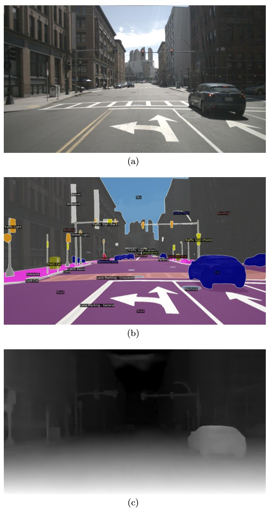
図7：（a）元画像、（b）セグメンテーション結果、（c）予測された深度マップ。
図中ラベル（(b) のクラス名）：Sky＝空、Building＝建物、Banner＝横断幕、Billboard＝看板、Traffic Light＝信号機、Traffic Sign (Back)／(Front)＝交通標識（裏面／表面）、Traffic Sign Frame＝標識の枠、Street Light＝街灯、Utility Pole＝電柱、Vegetation＝植生、Person＝人、Bicyclist＝自転車乗り、Wheeled Slow＝低速車両、Junction Box＝配電箱、Parking＝駐車場、Trash Can＝ゴミ箱、Catch Basin＝雨水桝、Curb＝縁石、Curb Cut＝縁石の切り下げ、Sidewalk＝歩道、Lane Marking - Crosswalk＝路面標示（横断歩道）、Lane Marking - General＝路面標示（一般）、Manhole＝マンホール、Road＝道路、Car＝乗用車
CARLA については閉ループ評価を行う。ただし、まずは開ループの方法でモデルを学習する必要があることに注意されたい。［45］のデータセット収集方法に従い、Town05 のシナリオを評価に、残りを学習に用いる。CARLA のカメラ構成は 4 台のカメラのみからなるため、SDV の周囲 360° の視野をカバーできないことは特筆に値する。過去 1.0\(s\) のコンテキストと現在の 4 台のカメラ画像がモデルに渡され、軌道が生成されて、SDV が目的地に到達するか制限時間を超えるまでシミュレータによって実行される。
実装の詳細。バックボーンとして EfficientNet-B4［50］を採用し、詳細なモデルの説明は補足資料で示す。一定の学習率 \(2\times 10^{-4}\) で Adam オプティマイザを用いる。4 基の Tesla V100 GPU で、混合精度により 20 エポック学習する。nuScenes データセットでは、公平な比較のため［26］の設定に従い、BEV の空間範囲は SDV の周囲 \((100m, 100m)\)、解像度は \((0.50m, 0.50m)\) とする。一方 CARLA では、SDV の周囲 \((40m, 40m)\)、解像度 \((0.20m, 0.20m)\) とする。連続する 2 フレーム間の時間間隔は、両データセットとも 0.5\(s\) である。
本節では、nuScenes データセット［4］でのさらなる定性的結果を示す。学習されたコストボリュームの可視化と、複数の意味要素の合成図を併せて示す。ここでは、色が暗いほどコスト値が小さく、その逆も同様であることに注意されたい。図8-9 に示すように、基本的に車両が占有しているすべての場所はコスト値が高く、開けた走行可能領域はコスト値が低い。
本節では、開ループの結果と同様に、CARLA シミュレータ［18］での定性的結果を示す。図12 に示すように、車両が車線の中央から逸脱すると、地図の検出精度は大きく低下する。これはおそらく、学習データの大部分が通常の状況のものであるというデータ収集方針のためである。地図の精度が低い場合、サンプラーとコストマップを利用する従来の方法は一般に期待される走行経路の挙動から逸脱するが、我々の精緻化操作のおかげで、車両は依然として期待される経路を正しく走行できる。異なるシナリオでのさらなる可視化を図10-13 に示す。
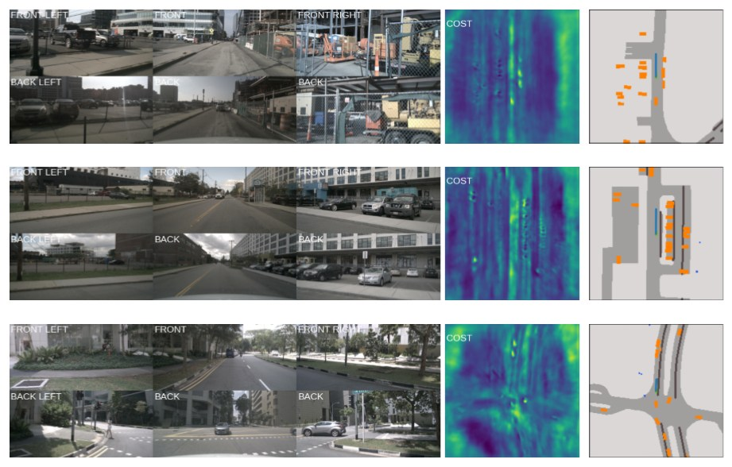
図8：直線道路における ST-P3 の定性的結果。右側に BEV 中間表現と計画軌道（青）を示す。また、予測モジュールから学習されたサブコストマップも示す。色が暗いほどコスト値が小さいことを示す点に注意されたい。
図中ラベル：FRONT LEFT／FRONT／FRONT RIGHT＝左前／前／右前、BACK LEFT／BACK／BACK RIGHT＝左後／後／右後（カメラ）、COST＝コスト
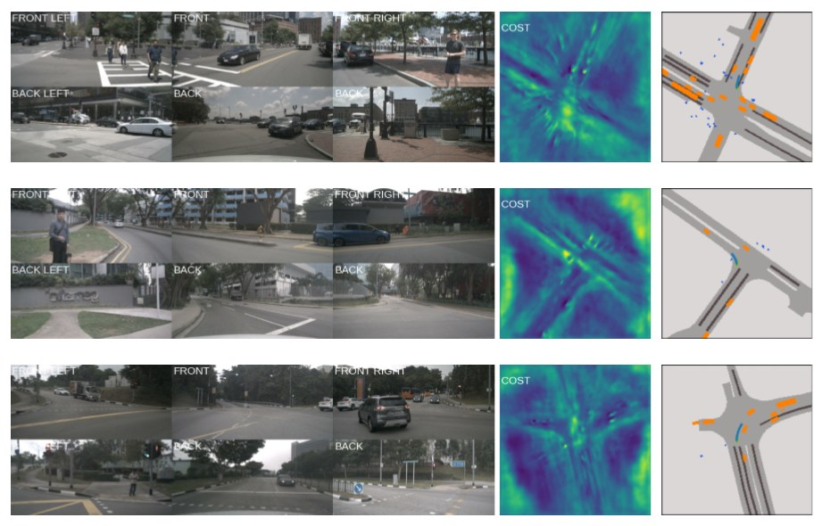
図9：交差点で曲がる際の ST-P3 の定性的結果。
図中ラベル：図8 と同じ（各カメラ名、COST＝コスト）
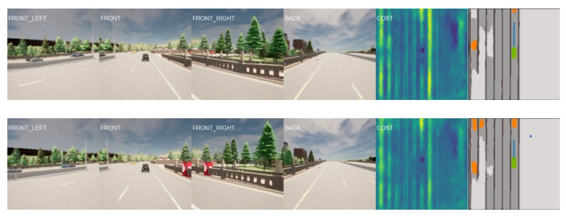
図10：直線道路での閉ループ計画における ST-P3 の定性的結果。
図中ラベル：FRONT_LEFT／FRONT／FRONT_RIGHT／BACK＝左前／前／右前／後（カメラ）、COST＝コスト
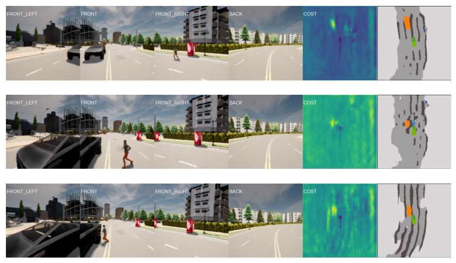
図11：ST-P3 は歩行者を検出すると減速する軌道を予測する。
図中ラベル：図10 と同じ
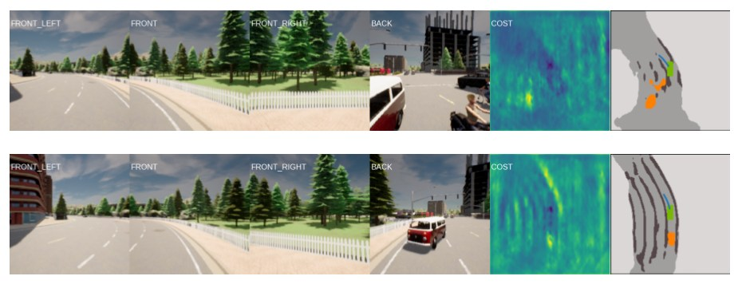
図12：所定の軌道（中心線）上を走行しているとき、ST-P3 の BEV 表現は正常になる。
図中ラベル：図10 と同じ
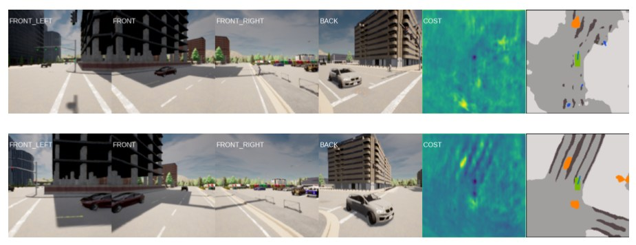
図13：交差点で曲がる際の、閉ループにおける ST-P3 の定性的結果。
図中ラベル：図10 と同じ